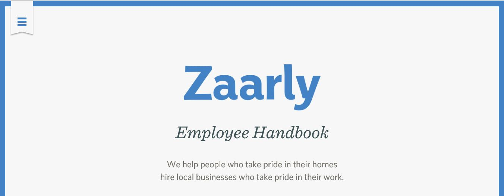
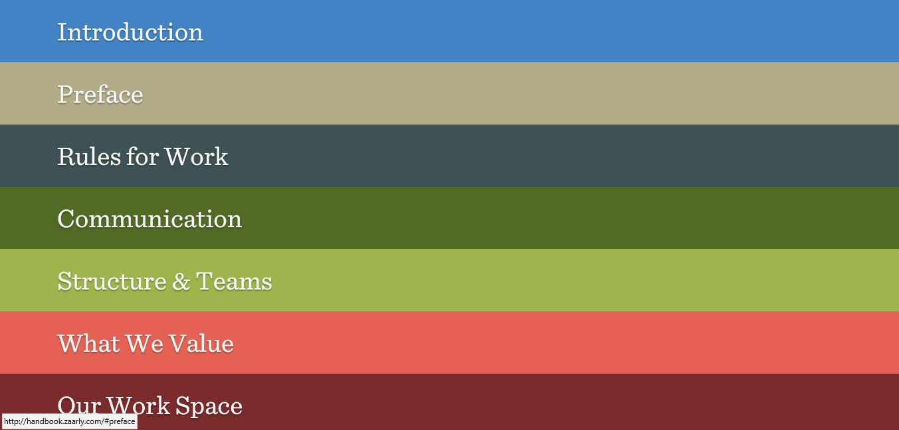

I like how it is simple,minimalistic,clean and proffesional.Also the feature of changing to pink when the user has clicked it or hovering is great.I would customize it by using the idea of simple fonts and customising it to have a colour appear when the user hovers or clicks on a link.

This is navbar that is original for below the navigation link is a description helping the user find quickly the page he wants.As well I like how when the user hovers over it creates a transparent box hanging from the top.I would use the hanging box idea appearing when hovering for my nav barand a description under each link to help the user.
When the user first opens the website a hamburger icon is in the corner when he clicks on it....
a vertical navigation bar fills the page with all the different links.I like the idea of a nav bar filling a page and not allowing a user to leave until he clicks a link.I would user the idea of filling the page by creating only a hamburger item on the home page and when clicked a page with the links in appearing in circles will fill the page.